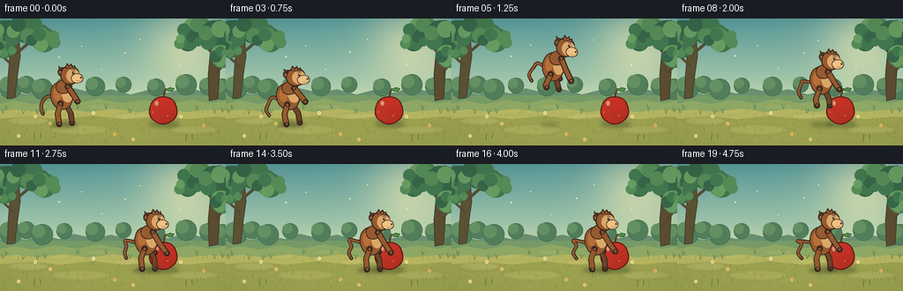
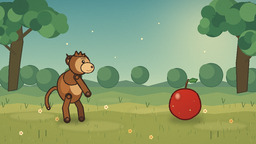
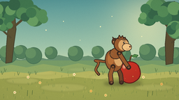
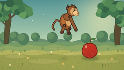
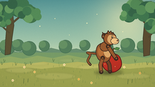

CODING AGENTS AS PIXEL WORLD MODELS
traex/DeepSeek-V4.1-Flash · dynamic_spatial_relationship_0056
点击播放 · 原生 RGB 像素
逐轮保存的候选
回放视频、检查图与代码变化。
每份候选均可单独播放。实际图片检查记录在下方工具轨迹中。
候选 01播放与检查图
点击播放 · 原生 RGB 像素

展开代码变化
--- 上一保存版本
+++ 本次保存版本
@@ -0,0 +1,579 @@
+from pathlib import Path
+import math
+
+import numpy as np
+from PIL import Image, ImageDraw, ImageFilter
+
+import artifact_io
+
+
+ROOT = Path(__file__).resolve().parent
+W, H, FPS, N = 256, 144, 4.0, 20
+SS = 4
+WW, HH = W * SS, H * SS
+
+
+def hs(v):
+ return int(round(v * SS))
+
+
+def hp(points):
+ return [(hs(x), hs(y)) for x, y in points]
+
+
+def mix(a, b, t):
+ return tuple(int(round(a[i] * (1.0 - t) + b[i] * t)) for i in range(3))
+
+
+def rgba(color, alpha=255):
+ if len(color) == 3:
+ return (*color, alpha)
+ return color
+
+
+def lerp(a, b, t):
+ return a + (b - a) * t
+
+
+def smoothstep(a, b, x):
+ t = max(0.0, min(1.0, (x - a) / (b - a)))
+ return t * t * (3.0 - 2.0 * t)
+
+
+def ellipse_points(cx, cy, rx, ry, rotation=0.0, count=48):
+ cr = math.cos(math.radians(rotation))
+ sr = math.sin(math.radians(rotation))
+ points = []
+ for i in range(count):
+ a = math.tau * i / count
+ x, y = rx * math.cos(a), ry * math.sin(a)
+ points.append((cx + x * cr - y * sr, cy + x * sr + y * cr))
+ return points
+
+
+def catmull_rom(points, samples=10):
+ pts = [points[0]] + list(points) + [points[-1]]
+ result = []
+ for i in range(1, len(pts) - 2):
+ p0, p1, p2, p3 = pts[i - 1], pts[i], pts[i + 1], pts[i + 2]
+ for j in range(samples):
+ t = j / samples
+ t2, t3 = t * t, t * t * t
+ x = 0.5 * (
+ 2 * p1[0]
+ + (-p0[0] + p2[0]) * t
+ + (2 * p0[0] - 5 * p1[0] + 4 * p2[0] - p3[0]) * t2
+ + (-p0[0] + 3 * p1[0] - 3 * p2[0] + p3[0]) * t3
+ )
+ y = 0.5 * (
+ 2 * p1[1]
+ + (-p0[1] + p2[1]) * t
+ + (2 * p0[1] - 5 * p1[1] + 4 * p2[1] - p3[1]) * t2
+ + (-p0[1] + 3 * p1[1] - 3 * p2[1] + p3[1]) * t3
+ )
+ result.append((x, y))
+ result.append(points[-1])
+ return result
+
+
+def poly(draw, points, fill, outline=None, width=0):
+ pts = hp(points)
+ draw.polygon(pts, fill=rgba(fill) if fill is not None else None)
+ if outline is not None:
+ draw.line(pts + [pts[0]], fill=rgba(outline), width=max(1, hs(width)), joint="curve")
+
+
+def line(draw, points, fill, width):
+ pts = hp(points)
+ draw.line(pts, fill=rgba(fill), width=max(1, hs(width)), joint="curve")
+ radius = width * 0.5
+ for x, y in (pts[0], pts[-1]):
+ draw.ellipse((x - hs(radius), y - hs(radius), x + hs(radius), y + hs(radius)), fill=rgba(fill))
+
+
+def circle(draw, x, y, r, fill, outline=None, width=0.0):
+ box = (hs(x - r), hs(y - r), hs(x + r), hs(y + r))
+ draw.ellipse(box, fill=rgba(fill) if fill is not None else None,
+ outline=rgba(outline) if outline is not None else None,
+ width=max(1, hs(width)) if outline is not None else 1)
+
+
+def glow_patch(size, center, color, sigma):
+ yy, xx = np.mgrid[0:size, 0:size]
+ d2 = (xx - center[0]) ** 2 + (yy - center[1]) ** 2
+ alpha = np.exp(-d2 / (2.0 * sigma * sigma))
+ arr = np.zeros((size, size, 4), dtype=np.uint8)
+ arr[:, :, :3] = color
+ arr[:, :, 3] = np.clip(alpha * 255, 0, 255).astype(np.uint8)
+ return Image.fromarray(arr, "RGBA")
+
+
+def make_background():
+ rng = np.random.default_rng(2207)
+ yy = np.arange(HH, dtype=np.float32)[:, None] / HH
+ xx = np.arange(WW, dtype=np.float32)[None, :] / WW
+
+ top = np.array([87, 151, 151], dtype=np.float32)
+ mid = np.array([177, 207, 174], dtype=np.float32)
+ low = np.array([242, 218, 161], dtype=np.float32)
+ t = np.clip(yy, 0, 1)
+ blend1 = np.clip(t / 0.58, 0, 1)[..., None]
+ blend2 = np.clip((t - 0.58) / 0.28, 0, 1)[..., None]
+ sky = top * (1 - blend1) + mid * blend1
+ sky = sky * (1 - blend2) + low * blend2
+ sky = np.broadcast_to(sky, (HH, WW, 3)).copy()
+
+ sx, sy = 211.0, 31.0
+ dx = xx * W - sx
+ dy = yy * H - sy
+ glow = np.exp(-(dx * dx + dy * dy) / (2 * 34.0 ** 2))[..., None]
+ warm = np.array([255, 241, 180], dtype=np.float32)
+ sky = sky * (1 - glow * 0.54) + warm * (glow * 0.54)
+
+ horizon_haze = np.exp(-((yy * H - 89.0) / 12.0) ** 2)[..., None]
+ sky = sky * (1 - horizon_haze * 0.14) + np.array([255, 235, 185]) * (horizon_haze * 0.14)
+ sky += rng.normal(0, 1.25, sky.shape)
+ image = Image.fromarray(np.clip(sky, 0, 255).astype(np.uint8), "RGB").convert("RGBA")
+ draw = ImageDraw.Draw(image, "RGBA")
+
+ # Layered distant foliage and soft hills.
+ far_hills = [
+ (-8, 88), (12, 82), (30, 86), (47, 80), (67, 85), (84, 79),
+ (105, 84), (126, 80), (148, 86), (171, 80), (190, 84),
+ (212, 78), (234, 84), (264, 80), (264, 104), (-8, 104),
+ ]
+ poly(draw, far_hills, (105, 143, 112))
+ draw.rectangle((0, hs(87), WW, hs(105)), fill=rgba((119, 155, 103), 82))
+
+ for x, y, r in [
+ (12, 78, 13), (30, 75, 10), (48, 80, 12), (73, 76, 9),
+ (108, 77, 11), (140, 75, 9), (177, 78, 10), (211, 75, 12),
+ (236, 77, 10), (252, 80, 12),
+ ]:
+ circle(draw, x, y, r, (83, 126, 91), (68, 110, 82), 0.7)
+ circle(draw, x - r * 0.35, y - r * 0.3, r * 0.62, (101, 144, 99))
+
+ hill_mid = [
+ (-8, 98), (16, 93), (38, 97), (62, 92), (87, 96), (112, 91),
+ (139, 96), (164, 92), (190, 97), (217, 92), (240, 96),
+ (264, 91), (264, 118), (-8, 118),
+ ]
+ poly(draw, hill_mid, (143, 168, 101))
+
+ meadow = [
+ (-8, 106), (18, 103), (45, 106), (72, 102), (100, 106),
+ (128, 102), (156, 106), (183, 102), (211, 106), (239, 103),
+ (264, 105), (264, 151), (-8, 151),
+ ]
+ poly(draw, meadow, (181, 181, 96))
+ poly(draw, [(-8, 114), (35, 111), (69, 114), (104, 110), (140, 114),
+ (178, 110), (213, 114), (245, 111), (264, 112), (264, 151), (-8, 151)],
+ (155, 161, 79))
+
+ # Framing trees: muted trunks and leafy crowns keep the action central.
+ poly(draw, [(8, 91), (17, 89), (20, 63), (23, 42), (21, 18), (13, 17),
+ (11, 41), (9, 66)], (91, 82, 52), (68, 65, 46), 1.0)
+ line(draw, [(18, 40), (32, 28), (39, 17)], (84, 76, 50), 3.2)
+ line(draw, [(15, 54), (3, 43), (-1, 31)], (84, 76, 50), 2.7)
+ poly(draw, [(237, 93), (247, 91), (249, 60), (253, 28), (250, 2),
+ (242, 3), (239, 31), (236, 63)], (91, 76, 49), (66, 60, 42), 1.1)
+ line(draw, [(246, 45), (231, 29), (225, 15)], (82, 70, 47), 3.1)
+ line(draw, [(246, 61), (258, 48), (263, 34)], (82, 70, 47), 2.5)
+
+ leaf_colors = [(54, 101, 72), (65, 119, 79), (84, 139, 87), (103, 156, 97)]
+ clusters = [
+ (9, 17, 25, 15), (31, 12, 28, 16), (50, 24, 23, 14),
+ (226, 14, 29, 16), (247, 20, 25, 18), (213, 26, 18, 11),
+ (5, 35, 15, 10), (252, 43, 12, 13),
+ ]
+ for idx, (cx, cy, rx, ry) in enumerate(clusters):
+ col = leaf_colors[idx % len(leaf_colors)]
+ dark = mix(col, (32, 70, 54), 0.35)
+ circle(draw, cx, cy, ry, dark)
+ circle(draw, cx - rx * 0.18, cy - ry * 0.12, ry * 0.88, col)
+ for k in range(5):
+ a = math.tau * k / 5 + idx * 0.27
+ lx = cx + math.cos(a) * rx * 0.62
+ ly = cy + math.sin(a) * ry * 0.45
+ circle(draw, lx, ly, ry * (0.45 + 0.08 * (k % 2)),
+ leaf_colors[(idx + k) % len(leaf_colors)])
+
+ # Dappled sunlight and meadow detail.
+ for x, y, rx, ry, a in [
+ (32, 116, 24, 5, 38), (91, 126, 34, 6, 32), (154, 111, 26, 4, 27),
+ (220, 126, 28, 5, 34), (115, 100, 19, 3, 22), (62, 105, 17, 3, 20),
+ ]:
+ patch = Image.new("RGBA", (WW, HH), (0, 0, 0, 0))
+ pd = ImageDraw.Draw(patch, "RGBA")
+ pd.ellipse((hs(x - rx), hs(y - ry), hs(x + rx), hs(y + ry)),
+ fill=(255, 234, 159, a))
+ patch = patch.filter(ImageFilter.GaussianBlur(hs(1.2)))
+ image.alpha_composite(patch)
+
+ rng = np.random.default_rng(118)
+ for _ in range(150):
+ gx = rng.uniform(1, 255)
+ gy = rng.uniform(105, 143)
+ length = rng.uniform(1.3, 4.2)
+ shade = rng.choice([(80, 112, 61), (95, 126, 64), (202, 193, 105)])
+ draw.line((hs(gx), hs(gy), hs(gx + rng.uniform(-0.8, 0.8)), hs(gy - length)),
+ fill=rgba(shade, 150), width=hs(0.35))
+
+ for x, y, col in [
+ (40, 111, (249, 228, 166)), (57, 119, (245, 207, 119)),
+ (106, 107, (255, 238, 183)), (130, 131, (240, 194, 97)),
+ (205, 111, (255, 233, 165)), (231, 121, (237, 188, 98)),
+ (21, 133, (255, 238, 181)), (151, 137, (248, 213, 124)),
+ ]:
+ for k in range(5):
+ a = math.tau * k / 5
+ circle(draw, x + math.cos(a) * 1.2, y + math.sin(a) * 1.2, 0.75, col)
+ circle(draw, x, y, 0.55, (194, 121, 47))
+
+ # Tiny distant grasses around the clearing edge.
+ for x in [3, 7, 26, 42, 51, 88, 120, 147, 170, 223, 243, 252]:
+ base_y = 102 + (x * 7 % 8)
+ draw.line((hs(x), hs(base_y), hs(x - 1), hs(base_y - 5)),
+ fill=(66, 99, 60, 185), width=hs(0.5))
+ draw.line((hs(x + 0.5), hs(base_y), hs(x + 2), hs(base_y - 4)),
+ fill=(80, 111, 63, 175), width=hs(0.45))
+
+ # Subtle painted canvas texture.
+ grain = rng.normal(0, 2.0, (HH, WW, 1))
+ arr = np.asarray(image).astype(np.float32)
+ arr[:, :, :3] += grain
+ return Image.fromarray(np.clip(arr, 0, 255).astype(np.uint8), "RGBA")
+
+
+def make_apple():
+ layer = Image.new("RGBA", (WW, HH), (0, 0, 0, 0))
+ cx, cy = 185.0, 103.0
+ rx, ry = 15.5, 16.5
+
+ body = []
+ for i in range(120):
+ a = math.tau * i / 120
+ x = cx + rx * math.sin(a) * (1.0 + 0.055 * math.cos(3 * a))
+ y = cy - ry * math.cos(a)
+ if math.cos(a) > 0.55:
+ y += 2.2 * (math.cos(a) - 0.55) / 0.45
+ body.append((x, y))
+
+ mask = Image.new("L", (WW, HH), 0)
+ md = ImageDraw.Draw(mask)
+ md.polygon(hp(body), fill=255)
+
+ yy, xx = np.mgrid[0:HH, 0:WW].astype(np.float32)
+ dx = (xx / SS - cx) / rx
+ dy = (yy / SS - cy) / ry
+ light = np.clip(0.82 - 0.22 * dx + 0.25 * (-dy), 0.48, 1.12)
+ base = np.array([174, 37, 31], dtype=np.float32)
+ warm = np.array([231, 79, 48], dtype=np.float32)
+ color = base[None, None, :] * (1 - light[..., None] * 0.36) + warm[None, None, :] * (light[..., None] * 0.36)
+ color += np.array([8, -2, -2], dtype=np.float32)[None, None, :] * (-dy[..., None])
+ arr = np.zeros((HH, WW, 4), dtype=np.uint8)
+ arr[:, :, :3] = np.clip(color, 0, 255).astype(np.uint8)
+ arr[:, :, 3] = np.asarray(mask)
+ layer = Image.fromarray(arr, "RGBA")
+
+ draw = ImageDraw.Draw(layer, "RGBA")
+ draw.line(hp(body) + [hp(body)[0]], fill=(92, 25, 23, 255), width=hs(1.25), joint="curve")
+ # Gloss and small natural apple flecks.
+ gloss = Image.new("RGBA", (WW, HH), (0, 0, 0, 0))
+ gd = ImageDraw.Draw(gloss, "RGBA")
+ gd.ellipse((hs(cx - 10.5), hs(cy - 10.5), hs(cx - 4.5), hs(cy - 3.2)),
+ fill=(255, 193, 144, 120))
+ gd.ellipse((hs(cx - 8.8), hs(cy - 9.5), hs(cx - 6.6), hs(cy - 5.2)),
+ fill=(255, 237, 205, 160))
+ gloss = gloss.filter(ImageFilter.GaussianBlur(hs(0.7)))
+ gloss.putalpha(Image.composite(gloss.getchannel("A"), Image.new("L", (WW, HH), 0), mask))
+ layer = Image.alpha_composite(layer, gloss)
+
+ draw = ImageDraw.Draw(layer, "RGBA")
+ for fx, fy, rr in [(173, 106, 0.45), (179, 113, 0.35), (190, 110, 0.42),
+ (194, 101, 0.3), (171, 98, 0.3)]:
+ draw.ellipse((hs(fx - rr), hs(fy - rr), hs(fx + rr), hs(fy + rr)),
+ fill=(248, 188, 113, 110))
+
+ line(draw, [(cx + 0.5, cy - 15), (cx + 1.4, cy - 20), (cx + 3.2, cy - 23)],
+ (84, 51, 29), 1.8)
+ line(draw, [(cx + 1.0, cy - 19.5), (cx + 2.1, cy - 22.0)],
+ (133, 84, 44), 0.7)
+ leaf = [
+ (cx + 2.5, cy - 22.2), (cx + 7.5, cy - 25.0), (cx + 12.5, cy - 23.7),
+ (cx + 10.2, cy - 20.8), (cx + 6.0, cy - 20.4),
+ ]
+ poly(draw, leaf, (72, 129, 65), (45, 91, 52), 0.75)
+ line(draw, [(cx + 3.2, cy - 22.2), (cx + 10.5, cy - 23.1)], (160, 192, 106), 0.55)
+
+ shadow = Image.new("RGBA", (WW, HH), (0, 0, 0, 0))
+ sd = ImageDraw.Draw(shadow, "RGBA")
+ sd.ellipse((hs(cx - 16), hs(116), hs(cx + 18), hs(123)), fill=(44, 57, 31, 92))
+ shadow = shadow.filter(ImageFilter.GaussianBlur(hs(2.2)))
+ return shadow, layer
+
+
+class MonkeyTransform:
+ def __init__(self, x, y, sx, sy, angle):
+ self.x, self.y = x, y
+ self.sx, self.sy = sx, sy
+ self.ca = math.cos(math.radians(angle))
+ self.sa = math.sin(math.radians(angle))
+
+ def p(self, point):
+ lx, ly = point
+ px = lx * self.sx
+ py = ly * self.sy
+ return (self.x + px * self.ca - py * self.sa,
+ self.y + px * self.sa + py * self.ca)
+
+ def points(self, points):
+ return [self.p(p) for p in points]
+
+ def ellipse(self, draw, cx, cy, rx, ry, fill, outline=None, width=1.0,
+ rotation=0.0, count=44):
+ pts = self.points(ellipse_points(cx, cy, rx, ry, rotation, count))
+ draw.polygon(hp(pts), fill=rgba(fill))
+ if outline is not None:
+ edge = hp(pts) + [hp(pts)[0]]
+ draw.line(edge, fill=rgba(outline), width=max(1, hs(width)), joint="curve")
+
+ def limb(self, draw, points, width, color, outline):
+ pts = self.points(points)
+ line(draw, pts, outline, width + 2.1)
+ line(draw, pts, color, width)
+ for x, y in (pts[0], pts[-1]):
+ circle(draw, x, y, width * 0.5, outline)
+ for x, y in (pts[0], pts[-1]):
+ circle(draw, x, y, max(0.5, width * 0.5 - 1.0), color)
+
+ def circle(self, draw, cx, cy, r, fill, outline=None, width=1.0):
+ x, y = self.p((cx, cy))
+ circle(draw, x, y, r * (self.sx + self.sy) * 0.5, fill, outline, width)
+
+
+def monkey_shadow(frame, x, y, jump_height, phase):
+ shadow = Image.new("RGBA", (WW, HH), (0, 0, 0, 0))
+ draw = ImageDraw.Draw(shadow, "RGBA")
+ width = max(10.0, 29.0 - jump_height * 0.34)
+ alpha = int(max(34, 94 - jump_height * 1.35))
+ cy = 120.2
+ draw.ellipse((hs(x - width * 0.55), hs(cy - 2.8), hs(x + width * 0.55), hs(cy + 3.1)),
+ fill=(42, 50, 30, alpha))
+ shadow = shadow.filter(ImageFilter.GaussianBlur(hs(1.9)))
+ frame.alpha_composite(shadow)
+
+
+def draw_monkey(frame, pose):
+ x = pose["x"]
+ y = pose["y"]
+ crouch = pose.get("crouch", 0.0)
+ tuck = pose.get("tuck", 0.0)
+ reach = pose.get("reach", 0.0)
+ arm_lift = pose.get("arm_lift", 0.0)
+ breath = pose.get("breath", 0.0)
+ angle = pose.get("angle", 0.0)
+ tail_phase = pose.get("tail_phase", 0.0)
+
+ sx = 0.96 + crouch * 0.007
+ sy = 0.96 - crouch * 0.008
+ xf = MonkeyTransform(x, y, sx, sy, angle)
+ layer = Image.new("RGBA", (WW, HH), (0, 0, 0, 0))
+ draw = ImageDraw.Draw(layer, "RGBA")
+
+ outline = (54, 38, 29, 255)
+ fur = (151, 90, 47, 255)
+ fur_light = (183, 112, 57, 255)
+ fur_dark = (112, 67, 41, 255)
+ tan = (219, 167, 105, 255)
+ tan_light = (239, 194, 131, 255)
+ hand = (82, 55, 42, 255)
+
+ # Tail curls behind the body and trails during the leap.
+ tail = [
+ (-9.0, -31.0 + crouch * 0.15),
+ (-17.0 - tail_phase * 1.2, -34.0 - 1.3 * math.sin(tail_phase)),
+ (-24.0, -29.0 + 2.0 * math.sin(tail_phase + 0.7)),
+ (-27.0 + 1.2 * math.cos(tail_phase), -20.0),
+ (-24.0, -13.5),
+ ]
+ tail_pts = catmull_rom(xf.points(tail), 9)
+ line(draw, tail_pts, outline, 4.0)
+ line(draw, tail_pts, fur, 2.35)
+ tip = tail_pts[-1]
+ circle(draw, tip[0], tip[1], 1.35, outline)
+ circle(draw, tip[0], tip[1], 0.65, tan)
+
+ # Far limbs.
+ far_arm = [(2.5, -45.0), (-0.5 + reach * 0.18, -35.0 + arm_lift * 0.35),
+ (4.0 + reach * 0.72, -27.0 + arm_lift)]
+ xf.limb(draw, far_arm, 4.0, fur_dark, outline)
+ far_leg = [(3.0, -25.0), (9.0, -13.0 + tuck * 0.35),
+ (10.0, -1.2 - tuck * 0.92)]
+ xf.limb(draw, far_leg, 4.4, fur_dark, outline)
+ fx, fy = xf.p(far_leg[-1])
+ circle(draw, fx, fy, 2.2, hand, outline, 0.7)
+
+ # Torso and chest.
+ xf.ellipse(draw, -1.0, -34.0 - breath, 12.8, 16.6, fur, outline, 1.1, -10)
+ xf.ellipse(draw, 5.8, -36.5 - breath, 6.7, 10.8, tan, None, 0, -4)
+ xf.ellipse(draw, -5.5, -37.0 - breath, 5.0, 9.0, fur_light, None, 0, 5)
+ xf.ellipse(draw, 2.0, -44.5 - breath, 9.0, 8.2, fur, outline, 1.0, -12)
+
+ # Near limbs.
+ near_leg = [(-2.5, -24.5), (-6.5, -13.0 + tuck * 0.32),
+ (-5.2, -0.8 - tuck)]
+ xf.limb(draw, near_leg, 4.7, fur, outline)
+ nx, ny = xf.p(near_leg[-1])
+ circle(draw, nx, ny, 2.35, hand, outline, 0.75)
+ circle(draw, nx + 0.5, ny - 0.25, 1.15, (132, 88, 58), None)
+
+ near_arm = [(7.0, -44.5), (13.0 + reach * 0.22, -34.5 + arm_lift * 0.4),
+ (17.5 + reach * 0.72, -26.5 + arm_lift)]
+ xf.limb(draw, near_arm, 4.8, fur, outline)
+ hx, hy = xf.p(near_arm[-1])
+ circle(draw, hx, hy, 2.45, hand, outline, 0.8)
+ circle(draw, hx + 0.35, hy - 0.15, 1.15, (143, 95, 63), None)
+
+ # Head, ear and expressive face in profile.
+ xf.ellipse(draw, 1.0, -62.0, 4.7, 5.3, fur_dark, outline, 1.0, -8)
+ xf.ellipse(draw, 1.1, -61.9, 2.8, 3.2, tan, None, 0, -8)
+ xf.ellipse(draw, 10.0, -58.0, 10.8, 11.0, fur, outline, 1.15, -4)
+ xf.ellipse(draw, 13.5, -57.0, 7.8, 8.1, tan, None, 0, -2)
+ xf.ellipse(draw, 18.4, -53.7, 7.0, 5.5, tan_light, outline, 0.85, 2)
+
+ # Hair tufts.
+ tuft = [(5.0, -66.5), (7.2, -72.0), (9.4, -67.8), (12.2, -71.2),
+ (13.2, -67.2), (16.0, -69.0), (15.8, -64.8)]
+ poly(draw, xf.points(tuft), fur, outline, 0.9)
+ poly(draw, xf.points([(0.8, -65.0), (-3.0, -69.2), (-1.5, -63.2)]),
+ fur_dark, outline, 0.65)
+
+ # Eye, brow, nose, and smile.
+ ex, ey = xf.p((14.2, -60.4))
+ circle(draw, ex, ey, 1.42, (47, 37, 29), None)
+ circle(draw, ex + 0.45, ey - 0.38, 0.45, (255, 242, 203), None)
+ brow_a, brow_b = xf.points([(12.0, -63.7), (16.5, -63.2)])
+ draw.line((hs(brow_a[0]), hs(brow_a[1]), hs(brow_b[0]), hs(brow_b[1])),
+ fill=outline, width=hs(0.65))
+ nx2, ny2 = xf.p((23.0, -54.4))
+ circle(draw, nx2, ny2, 1.1, (76, 48, 37), None)
+ circle(draw, nx2 + 0.25, ny2 - 0.15, 0.38, (173, 116, 82), None)
+ smile = xf.points([(22.2, -51.2), (19.4, -50.3), (17.4, -51.0)])
+ draw.line(hp(smile), fill=(101, 59, 43, 255), width=hs(0.58), joint="curve")
+
+ # A few fur marks add shape without visual noise.
+ for a, b in [
+ ((-7.5, -43.0), (-4.2, -41.5)),
+ ((-4.8, -45.4), (-1.8, -43.8)),
+ ((8.0, -66.2), (10.6, -65.3)),
+ ]:
+ p1, p2 = xf.points([a, b])
+ draw.line((hs(p1[0]), hs(p1[1]), hs(p2[0]), hs(p2[1])),
+ fill=(102, 60, 38, 150), width=hs(0.5))
+
+ frame.alpha_composite(layer)
+
+
+def landing_dust(frame, x, y, strength):
+ if strength <= 0.01:
+ return
+ dust = Image.new("RGBA", (WW, HH), (0, 0, 0, 0))
+ draw = ImageDraw.Draw(dust, "RGBA")
+ for i, (dx, dy, rr) in enumerate([
+ (-13, -2, 3.6), (-9, -4, 2.3), (9, -3, 3.1), (14, -1, 2.0),
+ (-17, 0, 1.8), (18, 0, 1.6),
+ ]):
+ a = int(strength * (54 + i * 3))
+ draw.ellipse((hs(x + dx - rr), hs(y + dy - rr * 0.65),
+ hs(x + dx + rr), hs(y + dy + rr * 0.65)),
+ fill=(231, 211, 148, a))
+ dust = dust.filter(ImageFilter.GaussianBlur(hs(1.0)))
+ frame.alpha_composite(dust)
+
+
+def ambient_motion(frame, index):
+ draw = ImageDraw.Draw(frame, "RGBA")
+ phase = index * 0.56
+ for j, (x, y, r, a) in enumerate([
+ (67, 43, 0.8, 62), (91, 31, 0.6, 48), (142, 39, 0.75, 54),
+ (160, 24, 0.5, 42), (204, 52, 0.65, 50), (114, 57, 0.45, 34),
+ ]):
+ ox = math.sin(phase + j * 1.7) * 1.4
+ oy = math.cos(phase * 0.7 + j) * 0.8
+ circle(draw, x + ox, y + oy, r, (255, 244, 185, a))
+
+ # A couple of foreground grass tips react to the landing.
+ sway = math.sin(phase * 0.65) * 0.7
+ for x, y, h in [(39, 138, 8), (46, 136, 6), (211, 139, 8), (218, 137, 6)]:
+ draw.line((hs(x), hs(y), hs(x + sway), hs(y - h)),
+ fill=(60, 88, 47, 185), width=hs(0.55))
+
+
+def vignette(image):
+ yy, xx = np.mgrid[0:HH, 0:WW].astype(np.float32)
+ nx = (xx / WW - 0.5) * 2.0
+ ny = (yy / HH - 0.5) * 2.0
+ d = np.sqrt(nx * nx * 0.72 + ny * ny)
+ alpha = np.clip((d - 0.82) * 36.0, 0, 42).astype(np.uint8)
+ shade = np.zeros((HH, WW, 4), dtype=np.uint8)
+ shade[:, :, :3] = (32, 43, 30)
+ shade[:, :, 3] = alpha
+ return Image.alpha_composite(image, Image.fromarray(shade, "RGBA"))
+
+
+def poses():
+ return [
+ {"x": 72.0, "y": 120.0, "crouch": 0.0, "tuck": 0.0, "reach": 0.0, "arm_lift": 0.0, "breath": 0.0, "angle": -2.5, "tail_phase": 0.0},
+ {"x": 72.0, "y": 119.5, "crouch": 0.0, "tuck": 0.0, "reach": 0.0, "arm_lift": 0.0, "breath": -0.45, "angle": -2.0, "tail_phase": 0.45},
+ {"x": 73.0, "y": 120.0, "crouch": 1.8, "tuck": 0.0, "reach": 0.5, "arm_lift": 0.0, "breath": 0.2, "angle": -4.0, "tail_phase": 0.9},
+ {"x": 74.0, "y": 120.0, "crouch": 5.5, "tuck": 0.0, "reach": 1.0, "arm_lift": 0.0, "breath": 0.6, "angle": -5.0, "tail_phase": 1.35},
+ {"x": 91.0, "y": 108.0, "crouch": -1.0, "tuck": 4.0, "reach": 4.0, "arm_lift": 2.5, "breath": -0.2, "angle": 4.5, "tail_phase": 1.9},
+ {"x": 111.0, "y": 87.0, "crouch": -2.0, "tuck": 8.0, "reach": 7.5, "arm_lift": 6.0, "breath": -0.5, "angle": 9.0, "tail_phase": 2.6},
+ {"x": 132.0, "y": 77.0, "crouch": -2.5, "tuck": 10.0, "reach": 8.5, "arm_lift": 7.0, "breath": -0.4, "angle": 8.0, "tail_phase": 3.3},
+ {"x": 150.0, "y": 84.0, "crouch": -1.8, "tuck": 8.0, "reach": 7.0, "arm_lift": 5.0, "breath": -0.1, "angle": 5.0, "tail_phase": 4.0},
+ {"x": 163.0, "y": 103.0, "crouch": 0.0, "tuck": 3.8, "reach": 4.5, "arm_lift": 2.0, "breath": 0.1, "angle": 1.5, "tail_phase": 4.7},
+ {"x": 166.0, "y": 120.0, "crouch": 6.0, "tuck": 0.0, "reach": 5.0, "arm_lift": 4.0, "breath": 0.8, "angle": -3.5, "tail_phase": 5.4},
+ {"x": 166.0, "y": 120.0, "crouch": 3.2, "tuck": 0.0, "reach": 7.5, "arm_lift": 6.0, "breath": 0.2, "angle": -1.5, "tail_phase": 6.0},
+ {"x": 166.0, "y": 119.5, "crouch": 0.8, "tuck": 0.0, "reach": 8.5, "arm_lift": 7.0, "breath": -0.1, "angle": 0.5, "tail_phase": 6.55},
+ {"x": 165.5, "y": 119.5, "crouch": 0.0, "tuck": 0.0, "reach": 8.0, "arm_lift": 6.5, "breath": -0.35, "angle": 1.0, "tail_phase": 7.0},
+ {"x": 165.5, "y": 119.5, "crouch": 0.0, "tuck": 0.0, "reach": 7.5, "arm_lift": 6.0, "breath": -0.55, "angle": 1.5, "tail_phase": 7.4},
+ {"x": 165.0, "y": 120.0, "crouch": 0.2, "tuck": 0.0, "reach": 7.0, "arm_lift": 5.5, "breath": 0.0, "angle": 1.0, "tail_phase": 7.85},
+ {"x": 165.0, "y": 119.5, "crouch": 0.0, "tuck": 0.0, "reach": 6.5, "arm_lift": 5.0, "breath": -0.25, "angle": 0.5, "tail_phase": 8.2},
+ {"x": 164.5, "y": 120.0, "crouch": 0.1, "tuck": 0.0, "reach": 6.0, "arm_lift": 4.5, "breath": 0.1, "angle": 0.0, "tail_phase": 8.55},
+ {"x": 164.5, "y": 119.5, "crouch": 0.0, "tuck": 0.0, "reach": 5.5, "arm_lift": 4.0, "breath": -0.15, "angle": -0.4, "tail_phase": 8.9},
+ {"x": 164.0, "y": 120.0, "crouch": 0.0, "tuck": 0.0, "reach": 5.0, "arm_lift": 3.5, "breath": 0.0, "angle": -0.5, "tail_phase": 9.2},
+ {"x": 164.0, "y": 119.5, "crouch": 0.0, "tuck": 0.0, "reach": 4.5, "arm_lift": 3.0, "breath": -0.2, "angle": -0.3, "tail_phase": 9.5},
+ ]
+
+
+def render():
+ background = make_background()
+ apple_shadow, apple = make_apple()
+ pose_list = poses()
+ frames = []
+
+ for i, pose in enumerate(pose_list):
+ frame = background.copy()
+ ambient_motion(frame, i)
+ frame.alpha_composite(apple_shadow)
+ frame.alpha_composite(apple)
+
+ jump_height = max(0.0, 120.0 - pose["y"])
+ monkey_shadow(frame, pose["x"], pose["y"], jump_height, i)
+ draw_monkey(frame, pose)
+
+ if 9 <= i <= 12:
+ landing_dust(frame, 164.5, 120.0, [0.0, 1.0, 0.55, 0.2][i - 9])
+
+ frame = vignette(frame)
+ frame = frame.convert("RGB").resize((W, H), Image.Resampling.LANCZOS)
+ frames.append(np.asarray(frame, dtype=np.uint8))
+
+ return np.stack(frames)
+
+
+if __name__ == "__main__":
+ rgb = render()
+ artifact_io.save(rgb, ROOT)
+ print(f"saved {rgb.shape} RGB frames to {ROOT}")
候选 02播放与检查图
点击播放 · 原生 RGB 像素
展开代码变化
--- 上一保存版本
+++ 本次保存版本
@@ -533,17 +533,17 @@
{"x": 132.0, "y": 77.0, "crouch": -2.5, "tuck": 10.0, "reach": 8.5, "arm_lift": 7.0, "breath": -0.4, "angle": 8.0, "tail_phase": 3.3},
{"x": 150.0, "y": 84.0, "crouch": -1.8, "tuck": 8.0, "reach": 7.0, "arm_lift": 5.0, "breath": -0.1, "angle": 5.0, "tail_phase": 4.0},
{"x": 163.0, "y": 103.0, "crouch": 0.0, "tuck": 3.8, "reach": 4.5, "arm_lift": 2.0, "breath": 0.1, "angle": 1.5, "tail_phase": 4.7},
- {"x": 166.0, "y": 120.0, "crouch": 6.0, "tuck": 0.0, "reach": 5.0, "arm_lift": 4.0, "breath": 0.8, "angle": -3.5, "tail_phase": 5.4},
- {"x": 166.0, "y": 120.0, "crouch": 3.2, "tuck": 0.0, "reach": 7.5, "arm_lift": 6.0, "breath": 0.2, "angle": -1.5, "tail_phase": 6.0},
- {"x": 166.0, "y": 119.5, "crouch": 0.8, "tuck": 0.0, "reach": 8.5, "arm_lift": 7.0, "breath": -0.1, "angle": 0.5, "tail_phase": 6.55},
- {"x": 165.5, "y": 119.5, "crouch": 0.0, "tuck": 0.0, "reach": 8.0, "arm_lift": 6.5, "breath": -0.35, "angle": 1.0, "tail_phase": 7.0},
- {"x": 165.5, "y": 119.5, "crouch": 0.0, "tuck": 0.0, "reach": 7.5, "arm_lift": 6.0, "breath": -0.55, "angle": 1.5, "tail_phase": 7.4},
- {"x": 165.0, "y": 120.0, "crouch": 0.2, "tuck": 0.0, "reach": 7.0, "arm_lift": 5.5, "breath": 0.0, "angle": 1.0, "tail_phase": 7.85},
- {"x": 165.0, "y": 119.5, "crouch": 0.0, "tuck": 0.0, "reach": 6.5, "arm_lift": 5.0, "breath": -0.25, "angle": 0.5, "tail_phase": 8.2},
- {"x": 164.5, "y": 120.0, "crouch": 0.1, "tuck": 0.0, "reach": 6.0, "arm_lift": 4.5, "breath": 0.1, "angle": 0.0, "tail_phase": 8.55},
- {"x": 164.5, "y": 119.5, "crouch": 0.0, "tuck": 0.0, "reach": 5.5, "arm_lift": 4.0, "breath": -0.15, "angle": -0.4, "tail_phase": 8.9},
- {"x": 164.0, "y": 120.0, "crouch": 0.0, "tuck": 0.0, "reach": 5.0, "arm_lift": 3.5, "breath": 0.0, "angle": -0.5, "tail_phase": 9.2},
- {"x": 164.0, "y": 119.5, "crouch": 0.0, "tuck": 0.0, "reach": 4.5, "arm_lift": 3.0, "breath": -0.2, "angle": -0.3, "tail_phase": 9.5},
+ {"x": 170.0, "y": 120.0, "crouch": 6.0, "tuck": 0.0, "reach": 5.0, "arm_lift": 4.0, "breath": 0.8, "angle": -3.5, "tail_phase": 5.4},
+ {"x": 172.0, "y": 120.0, "crouch": 3.2, "tuck": 0.0, "reach": 7.5, "arm_lift": 6.0, "breath": 0.2, "angle": -1.5, "tail_phase": 6.0},
+ {"x": 173.0, "y": 119.5, "crouch": 0.8, "tuck": 0.0, "reach": 8.5, "arm_lift": 7.0, "breath": -0.1, "angle": 0.5, "tail_phase": 6.55},
+ {"x": 173.5, "y": 119.5, "crouch": 0.0, "tuck": 0.0, "reach": 8.0, "arm_lift": 6.5, "breath": -0.35, "angle": 1.0, "tail_phase": 7.0},
+ {"x": 173.5, "y": 119.5, "crouch": 0.0, "tuck": 0.0, "reach": 7.5, "arm_lift": 6.0, "breath": -0.55, "angle": 1.5, "tail_phase": 7.4},
+ {"x": 173.0, "y": 120.0, "crouch": 0.2, "tuck": 0.0, "reach": 7.0, "arm_lift": 5.5, "breath": 0.0, "angle": 1.0, "tail_phase": 7.85},
+ {"x": 173.0, "y": 119.5, "crouch": 0.0, "tuck": 0.0, "reach": 6.5, "arm_lift": 5.0, "breath": -0.25, "angle": 0.5, "tail_phase": 8.2},
+ {"x": 172.5, "y": 120.0, "crouch": 0.1, "tuck": 0.0, "reach": 6.0, "arm_lift": 4.5, "breath": 0.1, "angle": 0.0, "tail_phase": 8.55},
+ {"x": 172.5, "y": 119.5, "crouch": 0.0, "tuck": 0.0, "reach": 5.5, "arm_lift": 4.0, "breath": -0.15, "angle": -0.4, "tail_phase": 8.9},
+ {"x": 172.0, "y": 120.0, "crouch": 0.0, "tuck": 0.0, "reach": 5.0, "arm_lift": 3.5, "breath": 0.0, "angle": -0.5, "tail_phase": 9.2},
+ {"x": 172.0, "y": 119.5, "crouch": 0.0, "tuck": 0.0, "reach": 4.5, "arm_lift": 3.0, "breath": -0.2, "angle": -0.3, "tail_phase": 9.5},
]
候选 03播放与检查图
可观测工具轨迹
实际执行的命令与返回图片。
命令 1exit 0
/bin/bash -c "sed -n '1,240p' GENERATION_RULES.md"
命令 2exit 0
/bin/bash -c 'cat task_spec.json'
命令 3exit 0
/bin/bash -c 'cat prompt.txt'
命令 4exit 0
/bin/bash -c "printf '%s\\n' '--- files ---'; find . -maxdepth 3 -type f -printf '%p\\n' | sort | sed -n '1,240p'; printf '%s\\n' '--- commands ---'; command -v ffmpeg; command -v python3; command -v convert; command -v blender; command -v chromium; command -v node"
命令 5exit 0
/bin/bash -c "sed -n '1,260p' artifact_io.py"
命令 6exit 0
/bin/bash -c "sed -n '1,260p' player_template.html"
命令 7exit 0
/bin/bash -c "python3 - <<'PY' import importlib.util for m in ['numpy','PIL','cv2','imageio','matplotlib','scipy']: print(m, bool(importlib.util.find_spec(m))) PY"
命令 8exit 0
/bin/bash -c 'python3 generate.py'
命令 9exit 0
/bin/bash -c 'python3 generate.py'
命令 10exit 0
/bin/bash -c "python3 - <<'PY'
from pathlib import Path
import json
import numpy as np
from PIL import Image
root=Path('.')
spec=json.loads((root/'task_spec.json').read_text())
z=np.load(root/'pixels.npz')['pixels']
frames=sorted((root/'frames').glob('*.png'))
assert z.shape == (spec['height'],spec['width'],spec['frames']), z.shape
assert len(frames) == spec['frames']
for p in frames:
im=Image.open(p)
assert im.size == (spec['width'],spec['height']) and im.mode == 'RGB', (p, im.size, im.mode)
assert (root/'index.html').stat().st_size > 10000
assert (root/'inspection.png').is_file() and (root/'transition_check.png').is_file()
print('frames:', len(frames))
print('resolution:', frames[0].name, Image.open(frames[0]).size)
print('pixels tensor:', z.shape, z.dtype)
print('player bytes:', (root/'index.html').stat().st_size)
print('outputs:', ', '.join(p.name for p in [root/'pixels.npz',root/'index.html',root/'inspection.png',root/'transition_check.png']))
PY"视觉工具实际返回图片 1

视觉工具实际返回图片 2

视觉工具实际返回图片 3

视觉工具实际返回图片 4

视觉工具实际返回图片 5

视觉工具实际返回图片 6

视觉工具实际返回图片 7

保存候选 3 份；完成命令 10 次；可验证图片返回 7 张。原始 API 响应与完整日志保留在本地。